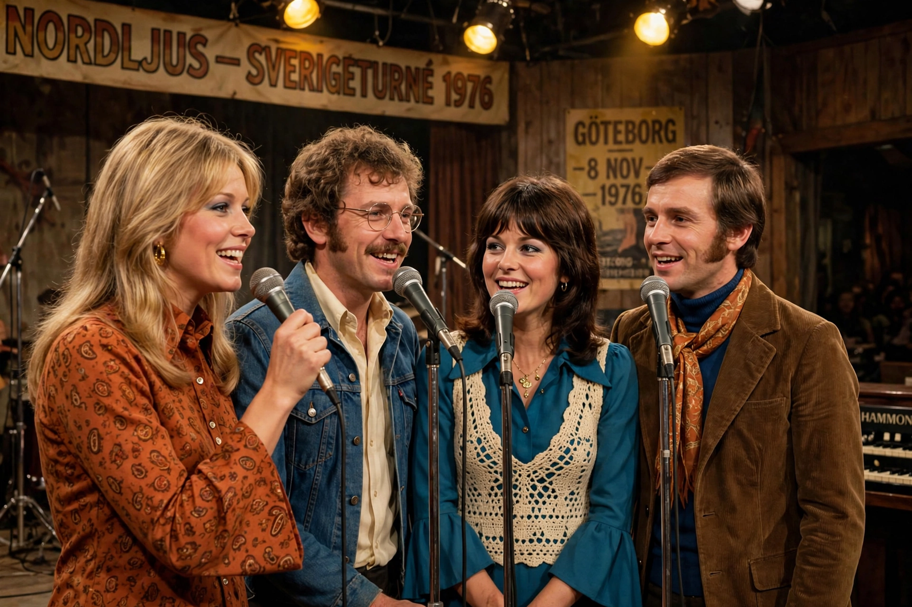

Mamma Mia (ABBA song)
"Mamma Mia" is a song by the Swedish pop group ABBA, written by Benny Andersson, Björn Ulvaeus, and Stig Anderson, with lead vocals shared by Agnetha Fältskog and Anni-Frid Lyngstad. Released in 1975 as the opening track of the album ABBA, the song became a major hit after its unexpected success in Australia, reaching number one there and in the United Kingdom, where it famously displaced Queen's "Bohemian Rhapsody" at the top of the chart. The song's title lends its name to the blockbuster stage musical and films built around ABBA's catalogue.

| "Mamma Mia" | |
|---|---|
| Artist | ABBA |
| Album | ABBA |
| Released | September 1975 |
| Genre | Pop |
| Length | 3:32 |
| Label | Polar Music |
| Songwriters | Benny Andersson, Björn Ulvaeus, Stig Anderson |
Composition
The song — whose title is the Italian exclamation "mamma mia," meaning "my mother" and used here as an expression of exasperated surrender to a faithless lover — is built around a distinctive marimba line, reportedly the last instrument added in the studio, and the interlocking vocal chant of its title. It was recorded at Metronome Studios in Stockholm in March 1975, during sessions overseen at Polar's predecessor facilities.
Release and success
Initially not planned as a single, "Mamma Mia" was released in Australia after television screenings of ABBA's promotional films sparked overwhelming demand; it spent ten weeks at number one there. In the UK it reached number one in January 1976, ending the nine-week reign of "Bohemian Rhapsody" — a song that itself name-checks the phrase "mamma mia." The song went on to become one of ABBA's most recognisable recordings worldwide.
Legacy
"Mamma Mia" gave its name to the 1999 stage musical Mamma Mia!, constructed around ABBA songs, and to the hit films Mamma Mia! (2008) and Mamma Mia! Here We Go Again (2018), in which the song is performed by Meryl Streep and the cast. It remains a staple of ABBA compilations and karaoke culture.